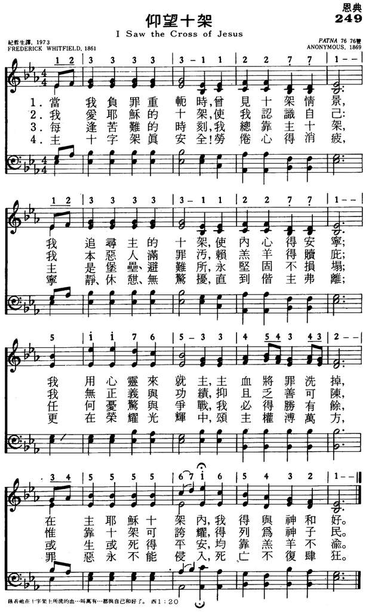
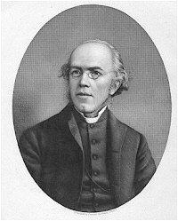

|
|
颂主新歌 |
|
|
1 I saw the cross of Jesus, 2 I love the cross of Jesus, 3 I trust the cross of Jesus, 4 Safe in the cross of Jesus! |
1.当我负罪重轭时，会见十架情景， |
|
|
https://www.mred365.cn/szxg/7252.html 
|
||
|
|
|
|


I Saw the Cross of Jesus (Lyric Video) | Happy Day! [Simple Easter Kids] https://youtu.be/uK9_-XN-Xyo -
I Saw The Cross Of Jesus - Traditional Hymn & Spiritual Song Lyrics with
Orchestral backing music.
https://youtu.be/cBqT605uD-4
| Text: | I Saw the Cross of Jesus |
| Author: | Frederick Whitfield |
| Tune: | WHITFIELD |
| Composer: | Anonymous |
| Short Name: | Frederick Whitfield |
| Full Name: | Whitfield, Frederick, 1829-1904 |
| Birth Year: | 1829 |
| Death Year: | 1904 |
Whitfield, Frederick,

B.A., son of H. Whitfield, was born at Threapwood, Shropshire, Jan. 7, 1829, and educated at Trinity College, Dublin, where he took his B.A. in 1859. On taking Holy Orders, he was successively curate of Otley, vicar of Kirby-Ravensworth, senior curate of Greenwich, and Vicar of Stanza John's, Bexley. In 1875 he was preferred to St. Mary's, Hastings. Mr. Whitfield's works in prose and verse number upwards of thirty, including Spiritual unfolding from the Word of Life; Voices from the Valley Testifying of Jesus; The Word Unveiled; Gleanings from Scripture, &c. Several of his hymns appeared in his Sacred Poems and Prose, 1861, 2nd Series, 1864; The Casket, and Quiet Hours in the Sanctuary. The hymn by which he is most widely known is I need Thee, precious Jesu.” Other hymns by him in common use include:~
Tune Information
| Title: | WHITFIELD (Greek) |
| Composer: | Anonymous |
| Meter: | 7.6.7.6 D |
| Incipit: | 12333 33112 2771 |
| Key: | D Major |
| Source: | Adapt. in Sullivan's Church Hymns, 1874;T. Moore's Melologue upon National Music, 1811;Greek melody |
| Copyright: | Public Domain |
Notes
Said to be a "Greek Air," CALCUTTA was one of the popular national tunes used by Dublin's Thomas Moore (1779-1852) in his Sacred Songs (1816). Arthur S. Sullivan (PHH 46) adapted it for congregational singing and published it in his Church Hymns with Tunes (1874). [The tune was earlier adapted for congregational singing in the tune LORAINE in Lowell Mason's and George Webb's The Psaltery (1845) and in the tune MILLENIUM SONG in Thomas Hastings and William B. Bradbury's The New York Choralist (1847)] The tune is named CALCUTTA because of its association with "From Greenland's Icy Mountains," a text by Reginald Heber (PHH 249), who was the Anglican bishop of Calcutta at the time of his death.
CALCUTTA is a bar form (AAB) with a harmonization that invites part singing.
--Psalter Hymnal Handbook, 1988